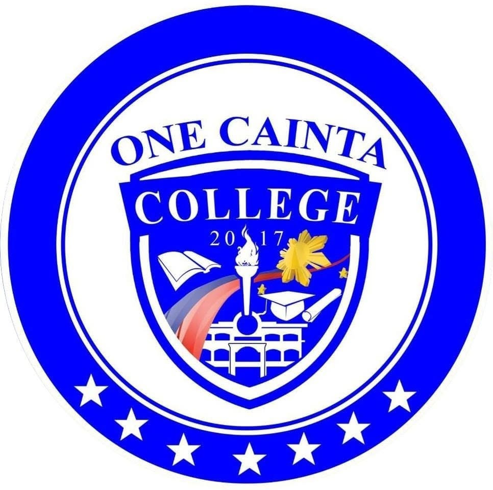

It is a four-year college degree that bridges the gap between technology and business. The course focuses on designing, implementing, and managing computer-based systems to solve organizational problems and improve business operations.
Designed to train future teachers for primary education, with strong foundation in pedagogy and child development.
Majors: English, Mathematics, Science, Social Studies
Equips students to teach in secondary schools with specialized subject knowledge.